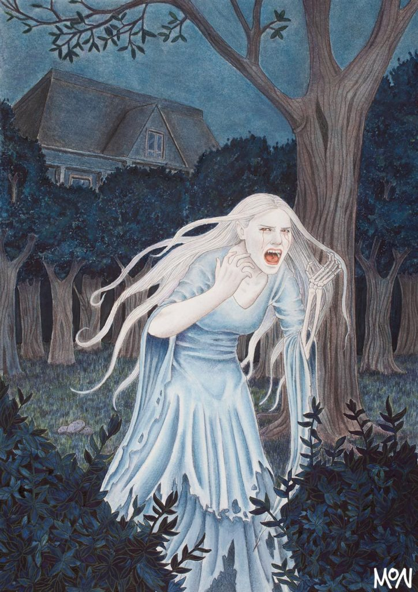
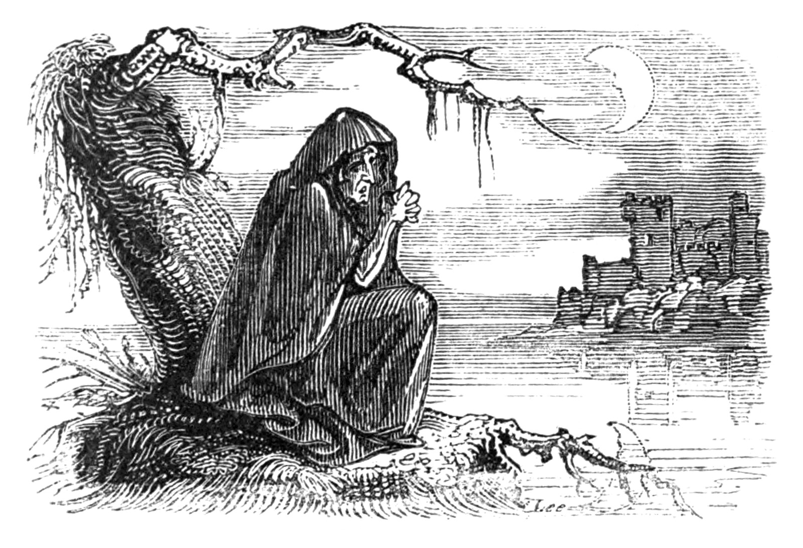
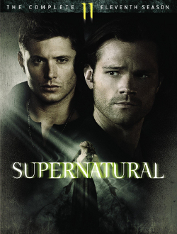

A banshee (/ˈbænʃiː/ BAN-shee; Modern Irish bean sí, from Old Irish: ben síde [bʲen ˈʃiːðʲe], "woman of the fairy mound" or "fairy woman") is a female spirit in Irish folklore who heralds the death of a family member, usually by screaming, wailing, shrieking, or keening. Her name is connected to the mythologically important tumuli or "mounds" that dot the Irish countryside, which are known as síde (singular síd) in Old Irish.

Sometimes she has long streaming hair and wears a grey cloak over a green dress, and her eyes are red from continual weeping. She may be dressed in white with red hair and a ghastly complexion, according to a firsthand account by Ann, Lady Fanshawe in her Memoirs. Lady Wilde in her books provides others:

Most, though not all, surnames associated with banshees have the Ó or Mc/Mac prefix – that is, surnames of Goidelic origin, indicating a family native to the Insular Celtic lands rather than those of the Norse, Anglo-Saxon, or Norman. Accounts reach as far back as 1380 to the publication of the Cathreim Thoirdhealbhaigh (Triumphs of Torlough) by Sean mac Craith. Mentions of banshees can also be found in Norman literature of that time. The Ua Briain banshee is thought to be named Aibell and the ruler of 25 other banshees who would always be at her attendance. It is possible that this particular story is the source of the idea that the wailing of numerous banshees signifies the death of a great person. In some parts of Leinster, she is referred to as the bean chaointe (keening woman) whose wail can be so piercing that it shatters glass. In Scottish folklore, a similar creature is known as the bean nighe or ban nigheachain (little washerwoman) or nigheag na h-àth (little washer at the ford) and is seen washing the bloodstained clothes or armour of those who are about to die. In Welsh folklore, a similar creature is known as the cyhyraeth.
